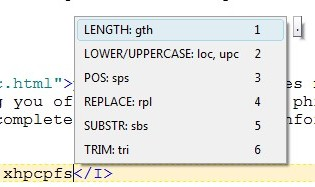
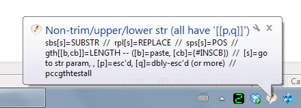
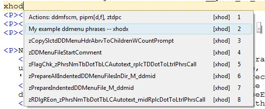
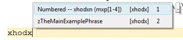
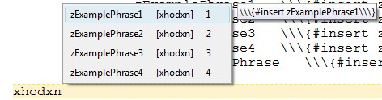

[BACK] (XBN-PhraseExpress is released under the LPGL 2.1)
The PMDM-project is a set of utilites for creating and maintaining phrase-creator drop-down-menus. A phrase-creator drop-down-menu is a heirarchical listing of all the phrases made available by one or more projects. Clicking on one prints a phrase-call to it. Specifically, the XBNPE "xh..." drop-down menu is created with these utilities.
Contents:
[GO] DDMenu file. The items in a phrase-creator ddmenu can be a command, action-only, action-command, variable, phrase-creator, or a custom type[GO] DDMenu phrase-file[GO] The ddmenu-file and phrase-file markers[GO] The DDMenu directory-id configuration file[GO] The main DDMenu processes[GO] One ddmenu, defined in many locationsFor a listing of all available phrases in the PMDM project, see "xhpm".
[top] One ddmenu, defined in many locationsThere is only one "xh..." phrase-creator menu, despite its pieces being defined in many locations throughout XBN-PhraseExpress. The only thing linking these items together is its autotexts.
This in one file:
Parent -- abcd . abc
Child . abcd
Parent -- abcd . abc
Child . abcd
This is a small advantage of PhraseExpress having no "scope". Everything is globally available (static).
[top] The main DDMenu processesfidmb*With no options, this transforms a state-1 ddmenu-file to state-2. Appending a
'c' only transforms command lines.'a' only transforms action lines.'v' only transforms variable lines."fidmbt" process reverses this transformation (changes ready-to-import phrases back to '.'-s), and also has the same [c,a,v] options.
Complete syntax: "fidmbsyn"
pidd*Transforms one-or-more state-2 ddmenu-files to state-3. See "piddsyn" for comprehensive syntax.
As a convenience, this also asks if "fidmb" should be run on every file, therefore transforming state-1 ddmenu-files directly into state-3.
Complete syntax: "piddsyn"
gtddmUsed from within a ddmenu phrase-file. Opens the ddmenu file in which its phrases are listed.
maixbxbx[a]Intended for use in a ddmenu file, although may be used in any phrase-file. Calling this bookmarks all "properly-formatted" phrases, where a properly-formatted is defined in the most generic sense:
start-of-line, indentation, text, tab, text, tab, text, end-of-line
While this is useable in normal (unindented) phrase-files, the more strictly-formatted "mpfpl" is recommended in its place.
To validate all phrases in all open documents, use the "[a]" option: maixbxbxa.
ddm[p]fsc"ddmfsc": Prints a blank ddmenu-file marker.
"ddmpfsc": Prints a blank ddmenu phrase-file marker.
[BACK] DDMenu-item phrase-type: Custom item-type[cmd, actn-only, actn-cmd, var, phrs-crtr, custom]
When a ddmenu-item does not fit exactly into the three possible line-item formats (for an action-only, action-command, command, or variable), it must be ensured that it is not accidentally interpreted by the fidmb process.
For example, this command-item displays an optional portion in the name:
zzTpCmdAbrv1C[Nm]_M_cmdm \\\{#insert zzTpCmdAbrv1C_M_cmdm\\\} xhtkm
When selecting this item, it prints
{#insert zzTpCmdAbrv1C_M_cmdm}
The "[Nm]" simply indicates that, to get the name of the abbreviation phrase (instead of the abbreviation itself), add "Nm" immediately before the first underscore.
Here is that ddmenu-item phrase in state-1:
zzTpCmdAbrv1C[Nm]_M_cmdm . xhtkm
fidmb only affects item-lines in state one. However, because the command-item format is
[tab-indentation][command-name][optional-description][tab].[tab][autotext]
the opening square-bracket ('[') is mis-interpreted as the beginning of the optional-description. It is therefore incorrectly translated to
zzTpCmdAbrv1C[Nm]_M_cmdm \\\{#insert zzTpCmdAbrv1C\\\} xhtkm
To avoid this problem, the phrase-bodies of custom lines must be manually populated.
When a body should remain as '.', but fidmb would normally not leave it alone (such as with
zCut...* -- xhcut (some pretend cut-related phrases) . xhcu
), simply add a dummy comment to the phrase-body:
zCut...* -- xhcut (some pretend cut-related phrases) (**). xhcu
[BACK] DDMenu-item phrase-type: Command[cmd, actn-only, actn-cmd, var, phrs-crtr, custom]
Clicking on a command ddmenu-item prints out a call to it. The majority of items in a phrase-creator-ddmenu are commands. (For general information on the command phrase-type, see ../basics/xbnpe_phrase_types.html#command.)
Note that "[BS]" next to a command-item, means that item is a TextPad-Bootstrap.
Clicking "zBallonDone" (see "xhpcb") prints this at the cursor:
{#insert zBalloonDone}
A command-item in the DDMenu menu must be in this format:
[tab-indentation][command-name][optional-description][tab].[tab][autotext]
The tab-indentation, as in all types, is required.
For example:
zBalloonDone . xhpcb
This format is recognized by the "fidmb" process. After executing "fidmb", this phrase is changed to its final form:
zBalloonDone \\\{#insert zBalloonDone\\\} xhpcb
[BACK] DDMenu-item phrase-type: Variable[cmd, actn-only, actn-cmd, var, phrs-crtr, custom]
Clicking on a variable ddmenu-item copies that variable-name into the clipboard. (For general information on the variable phrase-type, see ../basics/xbnpe_phrase_types.html#variable.)
Clicking on "Var: zvDIRECTORY" (see "xhcf") copies that variable-name into the clipboard.
A variable-item in the DDMenu menu must be of this format:
[tab-indentation]Var: [variable-name][optional-description][tab].[tab][autotext]
The tab-indentation, as in all types, is required.
For example:
Var: zvDIRECTORY* -- xhcfv (and other vars) . xhpcb
After executing 'fidmb', this phrase is changed to its final form:
Var: zvDIRECTORY* -- xhcfv (and other vars) {#SETCLIPBOARD zvDIRECTORY}{#insert zzBalCBContainsVarNm} xhpcb
This causes the variable-name to be placed in the clipboard, and informs the user of such, with a BALLOON. Note that the asterisk ('*') and following "-- xhcfv" indicates that there are sub-items (and +-two asterisks next to an item of any type indicates that the item is duplicated from its original ddmenu-position).
[BACK] DDMenu-item: Action with no corresponding command[cmd, actn-only, actn-cmd, var, phrs-crtr, custom]
Clicking on an "action with no corresponding command", or "action-only" ddmenu-item gives you a choice to:
../basics/xbnpe_phrase_types.html#action.)
Clicking on
Main action: klw1
Asks you if you want to copy "klw1" into to the clipboard and then execute it, or just copy it.
Note that when multiple actions are displayed in a single item, it responds with nothing (it prints a dot).
An action-item in the DDMenu menu must be of this format:
[tab-indentation][description-field][tab](*actnonly=klw1*).[tab][autotext]
The tab-indentation, as in all types, is required. Note that the description field's must be at least one character in length, but is otherwise ignored.
For example:
Main action: klw1 (*ao=klw1*). xhclak
After executing 'fidmb', this phrase is changed to its final form:
Main action: klw1 (*mao=klw1*){#SETPHRASE -description zvACTN_NM -content klw1 -autotext zvACTN_NM -folder ctvv_folder}{#insert zzMainActnNmOnlyCpExeOrCpDlg_M_actm} xhclak
This sets the action-name to a variable, and then calls a function that prompts the user and does the desired action.
[BACK] DDMenu-item: Action command[cmd, actn-only, actn-cmd, var, phrs-crtr, custom]
Clicking on an "action with a corresponding command", or "action-command" ddmenu-item gives you a choice to:
../basics/xbnpe_phrase_types.html#action.)
Clicking on
"fidmb: zFillInAllDDMenuTbDtTbBodies"
(see "xhpm") prompts you to copy-and-then-execute "fidmb", copy it only, or print this:
{#insert zFillInAllDDMenuTbDtTbBodies}
Note that when multiple actions are displayed in a single item, it responds with nothing (it prints a dot).
An action-item in the DDMenu menu must be of this format:
[tab-indentation][action-name]: [alt-cmd-name]xhpm[optional-description][tab].[tab][autotext]
The tab-indentation, as in all types, is required.
For example:
fidmb: zFillInAllDDMenuTbDtTbBodies . xhpm
After executing 'fidmb', this phrase is changed to its final form:
fidmb: zFillInAllDDMenuTbDtTbBodies {#SETPHRASE -description zvACTN_CLN_CMD -content fidmb:zFillInAllDDMenuTbDtTbBodies -autotext zvACTN_CLN_CMD -folder ctvv_folder}{#insert zzCpExeActnOrPhrsClCmd_M_actclncmd} xhpm
This sets the action-name-colon-command-name (eliminating the space) to a variable, and then calls a function that prompts the user and does the desired action.
[BACK] DDMenu-item phrase-type: Phrase-Creator[cmd, actn-only, actn-cmd, var, phrs-crtr, custom]
Clicking on a phrase-creator phrase-type item does nothing (it prints out a dot). Phrase-creators in the ddmenu are only for the purpose of reminding you of the "main" phrase-creators. Actually using that phrase creator will present you with a complete syntax and further information on all its related phrase-creators.

Note the popup displaying the '.', indicating that it does (effectively) nothing. However, executing the "gth" phrase-creator first prints this at the cursor
{#LENGTH }
and ends by popping up this balloon, which contains the complete syntax for many other string-related phrase-creators:

There is no required format for phrase-creators, as they exist in ddmenu-items. As long as they don't match any the format of any other phrase-types.
[top] DDMenu fileThe items in a phrase-creator ddmenu can be of any of the basic "normal" phrase-types: commands, action-only, action-command, variables, and phrase-creators. It can also be an additional custom type, which really means "not any other type". Each item-type responds in a certain way when selected, and each has a specific required phrase-format, in order for the "fidmb" process to recognize it.
Contents:
[GO] The phrase-creator ddmenu-file markerTo validate the phrases in a ddmenu-phrase file, regardless of state or phrase-type, use 'maixbxbx'
| State 1
Pre "fidmb"
Pre "pidd*" |
State 2
Post "fidmb"
Pre "pidd*" |
State 3
Post "pidd*" |
|
| Phrase-name | ...pcddmenu.txt |
...pcddmenu.px.txt |
|
| Directory | ...z_phrase_creator_ddmenus\ |
...z_phrase_creator_ddmenus\z_temp_folder_for_unindenting_ddmenus\ |
|
| Indented | yes | no | |
| Importable | no | yes | |
| Directly editable | yes | no | |
| DDMenu-item
Phrase bodies |
At least one is unusable (equal to '.') |
As described in the ddmenu-item phrase-type sections
(command, action-only, action-command, variable, phrase-creator, custom type) |
|
[top] The DDMenu directory-id ("ddid") configuration variablesEach directory of ddmenu-files is defined by a set of configuration variables. These variables form the heart of the PMDM project, linking ddmenu-files to their various phrase-files. It is expected that every ddmenu-file existing in a single windows directory (and single PhraseExpress folder) is also contained in the config-vars for a single ddmenu-directory id.
"ddid" configuration variablesThe ddmenu directory-id is abbreviated "ddid". This id (such as "tpkc" in the TextPad built-in commands [TPKC] project) is part of the name of these configuration variables. Using "tpkc" as an example, here is the universe of ddmenu-config-vars:
[GO] zzAllFilePrefixesInDDMenuDirQbl_tpkc: The file-name prefix for all ddmenu-files in this directory.[go] zzDDMenuDir_tpkc: The path in which these ddmenu-files exist on disk (in Windows).
[GO] zzPmdmFNmPreTpkcCwlpdf: The file-name prefix for a single ddmenu-file. One per-ddmenu-file[BACK] The "ddid" configuration fileThese configuration variables, for a single ddmenu directory, are defined in a file named
zz_tpkc__pcddmenu_config.px.txt
or more generically:
zz_[ddid]__pcddmenu_config.px.txt
"normal" phrase-files should be stored outside of the actual ddmenu-directory, since its settings must be different from the ddmenu-files themselves.
Here is the actual content of the file
"...\xbnpe\textpad__tpkc\non_bootstrap_utils\zz_tpkc__pcddmenu_config.px.txt"
(as of July 2013. Displayed in uncompressed form for clarity):
zzAllFilePrefixesInDDMenuDirQbl_tpkc
[{#insert zzPmdmFNmPreTpkcCwlpdf}][{#insert zzPmdmFNmPreTpkcFind}][{#insert zzPmdmFNmPreTpkcOther}][{#insert zzPmdmFNmPreTpkcPex}][{#insert zzPmdmFNmPreTpkcRplc}][{#insert zzPmdmFNmPreTpkcStrTknz}][{#insert zzPmdmFNmPreTpkcTextpad}][{#insert zzPmdmFNmPreTpkcXkpProject}][{#insert zzPmdmFNmPreTpkcXpnpeBase}]
zzDDMenuDir_tpkc
{#insert zXPROOT_DIR_tpkc}non_bootstrap_utils\z_phrase_creator_ddmenus\
zzPmdmFNmPreTpkcCwlpdf
tpkc_btstrp__cwlpdf__pcddmenu
zzPmdmFNmPreTpkcFind
tpkc_btstrp__snr__find__pcddmenu
zzPmdmFNmPreTpkcOther
tpkc_btstrp__other__pcddmenu
zzPmdmFNmPreTpkcPex
tpkc_btstrp__pe__pcddmenu
zzPmdmFNmPreTpkcRplc
tpkc_btstrp__snr__rplc__pcddmenu
zzPmdmFNmPreTpkcStrTknz
tpkc_btstrp__snr__string_tknze__pcddmenu
zzPmdmFNmPreTpkcTextpad
textpad__prefs_tpkc__pcddmenu
zzPmdmFNmPreTpkcXkpProject
xkp__pcddmenu
zzPmdmFNmPreTpkcXpnpeBase
xbnpe_base_pcddmenu
[BACK] DDMenu config-var: zzAllFilePrefixesInDDMenuDirQbl_tpkcThe sQuare-Bracketed List of all ddmenu-file prefixes (no extensions, such as ".txt" or ".px.txt") in this ddmenu-directory. The name of this phrase--everything following the underscore--defines this ddmenu-directory's identifier. In this example, it is "tpkc"
Example value:
[{#insert zzPmdmFNmPreTpkcCwlpdf}][{#insert zzPmdmFNmPreTpkcFind}][{#insert zzPmdmFNmPreTpkcOther}][{#insert zzPmdmFNmPreTpkcPex}][{#insert zzPmdmFNmPreTpkcRplc}][{#insert zzPmdmFNmPreTpkcStrTknz}][{#insert zzPmdmFNmPreTpkcTextpad}][{#insert zzPmdmFNmPreTpkcXkpProject}][{#insert zzPmdmFNmPreTpkcXpnpeBase}]
Each of these variables is the file-name prefix of a single ddmenu-file.
This qbl-list (or qb-list) is used by the "piddd*" utility, to prepare all ddmenu-files in this directory at once.
[BACK] DDMenu config-var: zzDDMenuDir_tpkcThe full-path of the directory in which this ddid's DDMenu-files exist. This should be defined with one of the XBNPE "zXROOT_DIR_*" variables. Example value:
{#insert zXPROOT_DIR_tpkc}non_bootstrap_utils\z_phrase_creator_ddmenus\
The foundation of the "zXPROOT_DIR_*" variables is located in
...\xbnpe\xbnpe_xkp\configuration\xbnpe__directory_config_edit_this.px.txt
[BACK] DDMenu config-var: zzPmdmFNmPreTpkcCwlpdf"zzPmdmFNmPreTpkcCwlpdf" is the file-name prefix for "cwlpdf"-related phrases (functionality related to the "XBNPE-Char, Word, Line, Para, Doc, File" project). Each ddmenu-file in this ddmenu-directory must have its own "zzPmdmFNmPreTpkc..." configuration variable (change "Cwlpdf" to something appriate). This phrase-name is in the format
"zzPmdmFNmPre""ddid", 1-cased: "Tpkc""Cwlpdf"[top] Phrase-creator ddmenu markersThere is a special marker required in each ddmenu-file, and another in each of its phrase-files. These markers are what "link" the ddmenu and its phrase files together. Hidden behind these markers is the ddmenu-directory's configuration-file.
At some point within a ddmenu-file, is this special marker:
(*
Required by phrase-creator-ddmenu-utils...START
PM_DDMENU_DIR_ID=[ddmenu-directory-id]
Required by phrase-creator-ddmenu-utils...END
*)
The only critical line is
PM_DDMENU_DIR_ID=[ddmenu-directory-id]
where "[ddmenu-directory-id]" is equal to, for example, in the TextPad built-in commands (TPKC) project, "tpkc". this value is defined in the ddmenu-dir-id config file
This is the link between this ddmenu-file, and all its phrase-files--that is, all phrase-files whose phrases are listed in this ddmenu.
[BACK] DDMenu phrase-file markerAt some point within a ddmenu phrase-file, is this special marker:
(*
Required by phrase-creator-ddmenu-utils...START
PM_DDMENU_DIRID_FILENMPHRSNM_HDRAUTOTXT=pex/zzPmdmFNmPreDocXmpl/xhomn
Required by phrase-creator-ddmenu-utils...END
*)
The only critical line is
PM_DDMENU_DIRID_FILENMPHRSNM_HDRAUTOTXT=pex/zzPmdmFNmPreDocXmpl/xhomn
The existence of this marker indicates that the "most important" phrases in this file are listed in a particular ddmenu, at a specific location.
The name of the ddmenu-phrase-file marker is
PM_DDMENU_DIRID_FILENMPHRSNM_HDRAUTOTXT
and is followed immediately (no whitespace) with an equal-sign, and then immediately by three up-right-slash delimited values:
"ddid"): The configured identifier of the directory of this phrase-file's DDMenu-file. The ddid of this ddmenu-phrase-file is "pex"".txt") of this phrase-file's DDMenu-file. For this ddmenu-phrase-file, it is
zzPmdmFNmPreDocXmpl
pcddmenu_example__pcddmenupcddmenu_example__pcddmenu.txt
"xhomxn"The benifit of this ddmenu-phrase-file marker, is the ablity to execute "gtddm". This automatically opens this phrase-file's ddmenu, and navigates to the specific section within that ddmenu-file, where these phrases exist. Specifically, it opens the file, then searches for its header line:
" -- xhomxn".
[BACK] DDMenu-state 1 of 3: Pre "fidmb", pre "pidd*"This is the "original" state of the ddmenu file--before it is processed by either "fidmb" or "pidd*". In this state, the phrase-body of at least one command, actiononly, action-command, or variable ddmenu line-item is equal to a dot ('.').
Therefore, these items will do nothing when selected. The "fidmb" process transforms these dot-only phrase-bodies to their appropriate values. Once executed, each of these line-items will do as documented in each ddmenu-item type's section.
[BACK] Example ddmenu file in state 1Below is a trivial phrase-creator drop-down-menu, containing only commands.
File name:
"...\xbnpe\phrase_express\z_phrase_creator_ddmenus\pcddmenu_example__pcddmenu.txt"
(*
Required by phrase-creator-ddmenu-utils...START
PM_DDMENU_DIR_ID=pex
Required by phrase-creator-ddmenu-utils...END
*)
(*
MANUAL INSTRUCTIONS:
*DUPLICATE* this document, unindent every line in it, then import it with the following settings:
- No prefix
- Manual confirmation
- Assign the key-command (hotkey) to the first phrase
**All these phrases must be manually maintained.
*)
My example ddmenu phrases -- xhomx . xhom
Numbered -- xhomxn . xhomx
zExamplePhrase1xhomxn \\\{#insert \\\}
zExamplePhrase2 . xhomxn
zExamplePhrase3 . xhomxn
zExamplePhrase4 . xhomxn
zTheMainExamplePhrase . xhomx
Importing this file results in no phrases, since tab-indented phrases are not recognized by PhraseExpress. However, this is the most useful state, as far as editing and maintaining these ddmenus is concerned.
[BACK] DDMenu-state 2 of 3: Post "fidmb", pre "pidd*"All command, action-only, action-command, or variable ddmenu line-item have been processed--their phrase-bodies are no longer dots.
[BACK] Example ddmenu file in state 2Here is the example ddmenu-file, after being processed by "fidmb":
File name:
"...\xbnpe\phrase_express\z_phrase_creator_ddmenus\pcddmenu_example__pcddmenu.txt"
(*
Required by phrase-creator-ddmenu-utils...START
PM_DDMENU_DIR_ID=pex
Required by phrase-creator-ddmenu-utils...END
*)
(*
MANUAL INSTRUCTIONS:
*DUPLICATE* this document, unindent every line in it, then import it with the following settings:
- No prefix
- Manual confirmation
- Assign the key-command (hotkey) to the first phrase
**All these phrases must be manually maintained.
*)
My example ddmenu phrases -- xhomx . xhom
Numbered -- xhomxn . xhomx
zExamplePhrase1 \\\{#insert zExamplePhrase1\\\} xhomxn
zExamplePhrase2 \\\{#insert zExamplePhrase2\\\} xhomxn
zExamplePhrase3 \\\{#insert zExamplePhrase3\\\} xhomxn
zExamplePhrase4 \\\{#insert zExamplePhrase4\\\} xhomxn
zTheMainExamplePhrase \\\{#insert zTheMainExamplePhrase\\\} xhomx
The entire file is still unimportable, since it is indented. Now it is time to execute "pidd*".
[BACK] DDMenu-state 3 of 3: Post "pidd*"The unindented ddmenu-file has been processed by the "pidd*" utility. This duplicates and then unindents the file. It is now ready to be imported and used.
[BACK] Example ddmenu file in state 3File name:
'...\xbnpe\phrase_express\z_phrase_creator_ddmenus\z_temp_folder_for_unindenting_ddmenus\pcddmenu_example__pcddmenu.px.txt'
(*
Required by phrase-creator-ddmenu-utils...START
PM_DDMENU_DIR_ID=pex
Required by phrase-creator-ddmenu-utils...END
*)
(*
MANUAL INSTRUCTIONS:
*DUPLICATE* this document, unindent every line in it, then import it with the following settings:
- No prefix
- Manual confirmation
- Assign the key-command (hotkey) to the first phrase
**All these phrases must be manually maintained.
*)
My example ddmenu phrases -- xhomx . xhom
Numbered -- xhomxn . xhomx
zExamplePhrase1 \\\{#insert zExamplePhrase1\\\} xhomxn
zExamplePhrase2 \\\{#insert zExamplePhrase2\\\} xhomxn
zExamplePhrase3 \\\{#insert zExamplePhrase3\\\} xhomxn
zExamplePhrase4 \\\{#insert zExamplePhrase4\\\} xhomxn
zTheMainExamplePhrase \\\{#insert zTheMainExamplePhrase\\\} xhomx
"fidmb"Below is a trivial phrase-creator drop-down-menu, containing only commands.
File name:
"...\xbnpe\phrase_express\z_phrase_creator_ddmenus\pcddmenu_example__pcddmenu.txt"
(*
Required by phrase-creator-ddmenu-utils...START
PM_DDMENU_DIR_ID=pex
Required by phrase-creator-ddmenu-utils...END
*)
(*
MANUAL INSTRUCTIONS:
*DUPLICATE* this document, unindent every line in it, then import it with the following settings:
- No prefix
- Manual confirmation
- Assign the key-command (hotkey) to the first phrase
**All these phrases must be manually maintained.
*)
My example ddmenu phrases -- xhomx . xhom
Numbered -- xhomxn . xhomx
zExamplePhrase1xhomxn \\\{#insert \\\}
zExamplePhrase2 . xhomxn
zExamplePhrase3 . xhomxn
zExamplePhrase4 . xhomxn
zTheMainExamplePhrase . xhomx
Typing "xhomxn" lists all the "zExamplePhrase#" phrases (try it now, from within TextPad). Note that these phrases are automatically integrated into the overall "xh" heirarchy, just by nature of the autotexts assigned to them. Also note that the parent branches delcared in the comment are created in other "__pcddmenu.txt" documents.
These phrases do not actually exist. Although the phrase-calls are printed, actually calling them does nothing.
Typing "xhom":

Adding 'x':

Adding 'n':

[top] DDMenu phrase-fileThis is a trivial set of phrases that do nothing but print out some static text. (They do not actually exist in XBN-PhraseExpress.)
These phrases are not special in any way--they are just plain old PhraseExpress phrases. The only important element, as it relates to the PMDM-project, is its DDMenu-phrase-file marker.
(*
Required by phrase-creator-ddmenu-utils...START
PM_DDMENU_DIRID_FILENMPHRSNM_HDRAUTOTXT=pex/zzPmdmFNmPreDocXmpl/xhomn
Required by phrase-creator-ddmenu-utils...END
*)
zExamplePhrase1 The first example phrase zExamplePhrase1
zExamplePhrase2 The second example phrase zExamplePhrase2
zExamplePhrase3 A third example phrase zExamplePhrase3
zExamplePhrase4 A fourth example phrase zExamplePhrase4
zTheMainExamplePhrase The MAIN example phrase. Very important. zTheMainExamplePhrase